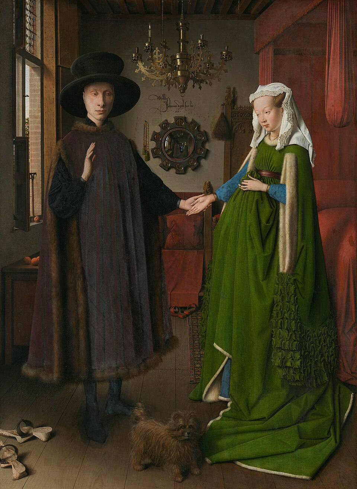
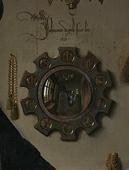

L'Opera e il Mistero
Olio su tavola datato 1434, I Coniugi Arnolfini è considerato uno dei capolavori assoluti dell'arte fiamminga e della pittura occidentale. Il dipinto raffigura il mercante lucchese Giovanni di Nicolao Arnolfini e la sua consorte in un ricco interno domestico, ma la vera natura della scena ha fatto scorrere fiumi di inchiostro tra gli storici dell'arte: è un ritratto di fidanzamento, un documento di matrimonio o un memoriale funebre?
Il Dettaglio Invisibile: Lo Specchio e la Firma
Il cuore concettuale dell'opera risiede nella parete di fondo. Uno specchio convesso sferico riflette non solo i due sposi di spalle, ma apre la vista sull'intera stanza e su due figure che varcano la soglia. Tra di loro c'è l'autore stesso del dipinto.

La firma sfacciata: Subito sopra lo specchio, in un elegante corsivo calligrafico, Jan van Eyck non appone una semplice firma accademica, ma lascia un'iscrizione inequivocabile: "Johannes de eyck fuit hic 1434" (Jan van Eyck fu qui). Una sorta di testimonianza oculare ante litteram, degna di un moderno reportage.
Simbolismo e Luce
Ogni oggetto nella stanza è carico di un profondo significato simbolico, reso immortale dalla tecnica prodigiosa della pittura a olio fiamminga, capace di modulare la luce che filtra dalla finestra laterale riflettendosi sui metalli, sul legno e sulle vesti pesanti dei protagonisti con un realismo ottico mai visto prima.